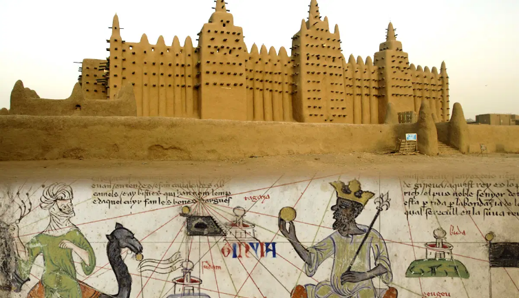
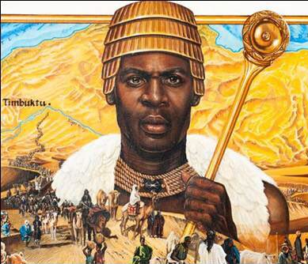
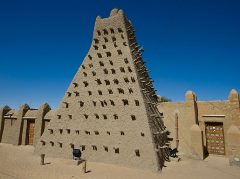

1. The Empire of Mali

- Came after the Ghana Empire
- Fully adopted Islam
- Home to the famous king Mansa Musa considered to be one of the richest people in world history.
2. How did the Mali Empire start?
As the Ghana Empire began to collapse, its vassals declared themselves kings and began to fight against each other.
Eventually, one leader, Sundiata Keita (The Lion King) unified a bunch of these lords and conquered the rest.
After defeating his enemies, Sundiata was declared the Mansa (Emperor) and all the kings agreed to become his vassals.

3. How did the Mali Empire work?
The leader of the empire was the Mansa
He was supported by a council called the Gbara. The Gbara was made up of all the leaders of the clans. (A really extended family.)
Outside of the middle of the empire, vassals ruled over the territories but they had to pay taxes to the Mansa.

4. How did the Mali Empire get so rich?
Despite the wealth of the Empire, most people were farmers.
Gold belonged to the mansa and were paid for using gold dust like in the Ghana empire.
Salt & Copper were also very important. The Mali empire had many advanced metal working artisans (craftspeople)